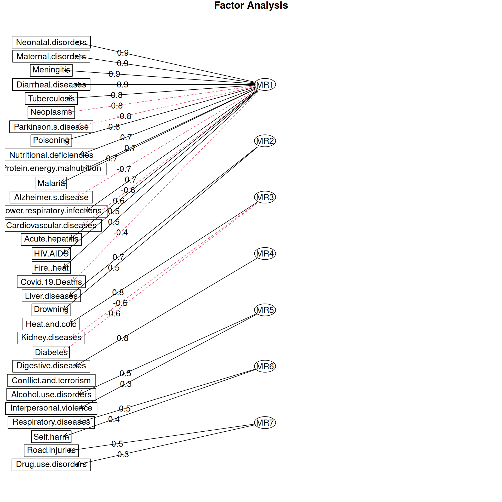

Tunnuste vahel esineb peaaegu alati korrelatsioon, mis ühtlasi viitab tunnuste jagatud hajuvusele. Selle ühise hajuvuse arvutamiseks ja mõtestamiseks on palju võimalusi. Üks lähenemine on koondada võimalikult suur osa hajuvusest esimestesse peakomponentidesse, mis on sel juhul laetud tunnuste poolt. Faktoranalüüsi lähenemine on aga teatud mõttes vastupidine. Selle käigus leitavaid faktorid käsitletakse varjatud tunnustena, mis seletavad hoopis analüüsi kaasatud tunnuseid.
Mõiste
Faktoranalüüsi (factor analysis) käigus leitakse tunnuste ühise hajuvuse alusel faktorid.
Faktorid on selles tähenduses varjatud muutujad (latent variables), mis seletavad olemasolevaid tunnuseid.
Faktorid niisiis andmetes eraldi tunnustena ei esine. Oletame, et need on tegelikult olemas, esinevad teatud määral olemasolevates tunnustes ja nende alusel tuletatavad. Iga faktor on niisiis seotud ainult teatud tunnustega.
Enamasti kasutatakse faktoranalüüsi andmete esialgseks uurimiseks, sest sellel puudub paljude arvutusviiside tõttu üksainus ja nö õige lahendus. Siiski on olemas erinevaid protseduure nende lahenduste testimiseks ja kinnitamiseks, mille võib kokku võtta mõistega struktuurvõrrandite mudelid.
Uurime järgnevalt surmapõhjuste osakaale maailma riikides. Võime oletada, et erinevate põhjuste taga võivad olla samad varjatud tunnused, mille kohta meil või üleüldse andmeid ei ole.
surm <-read.csv('andmed/deathcause.csv')rownames(surm) <- surm$Country.Namesurm$Country.Name <-NULLstr(surm)
'data.frame': 191 obs. of 31 variables:
$ Covid.19.Deaths : num 0.01002 0.05055 0.01416 0.12519 0.00019 ...
$ Cardiovascular.diseases : num 0.282 0.552 0.502 0.252 0.148 ...
$ Respiratory.diseases : num 0.0322 0.0349 0.0386 0.0581 0.0227 ...
$ Kidney.diseases : num 0.0257 0.0141 0.042 0.0238 0.0142 ...
$ Neonatal.disorders : num 0.10787 0.00689 0.04489 0 0.10493 ...
$ Meningitis : num 0.007114 0.000556 0.001497 0 0.014538 ...
$ Malaria : num 0.00241 0 0 0 0.06221 ...
$ Interpersonal.violence : num 0.02283 0.00244 0.00235 0 0.00562 ...
$ HIV.AIDS : num 1.45e-03 8.56e-05 1.35e-03 4.47e-03 9.69e-02 ...
$ Tuberculosis : num 0.016508 0.000471 0.002281 0 0.067796 ...
$ Maternal.disorders : num 0.018378 0.000128 0.003271 0 0.011936 ...
$ Lower.respiratory.infections: num 0.0851 0.0196 0.0297 0.0298 0.0737 ...
$ Alcohol.use.disorders : num 0.000669 0.00077 0.000569 0.00149 0.001217 ...
$ Diarrheal.diseases : num 0.01966 0.0003 0.0027 0.00149 0.07463 ...
$ Poisoning : num 0.002389 0.000471 0.0018 0 0.002498 ...
$ Nutritional.deficiencies : num 0.005662 0.000214 0.000584 0 0.017393 ...
$ Alzheimer.s.disease : num 0.00808 0.03925 0.02671 0.05365 0.00659 ...
$ Parkinson.s.disease : num 0.00255 0.01061 0.00658 0.01043 0.00154 ...
$ Acute.hepatitis : num 8.83e-03 4.28e-05 1.33e-03 1.49e-03 1.42e-03 ...
$ Digestive.diseases : num 0.0315 0.0226 0.0328 0.0402 0.0518 ...
$ Liver.diseases : num 0.0173 0.0143 0.0207 0.0179 0.0327 ...
$ Protein.energy.malnutrition : num 0.005507 0.000128 0.000472 0 0.016764 ...
$ Neoplasms : num 0.0967 0.2014 0.1221 0.3428 0.0738 ...
$ Fire..heat : num 0.00221 0.00077 0.00401 0 0.00296 ...
$ Drowning : num 0.00768 0.00154 0.0027 0 0.00457 ...
$ Drug.use.disorders : num 0.001848 0.001241 0.002697 0 0.000462 ...
$ Road.injuries : num 0.0376 0.0104 0.0567 0.0119 0.0534 ...
$ Heat.and.cold : num 0.000269 0.000171 0.000205 0 0.000658 ...
$ Self.harm : num 0.00734 0.00651 0.00777 0.01192 0.01112 ...
$ Conflict.and.terrorism : num 1.11e-01 0.00 6.67e-05 0.00 9.23e-05 ...
$ Diabetes : num 0.02192 0.00749 0.02732 0.01341 0.02327 ...
29.1 Faktormudel
Faktoranalüüsi käsitluses laadivad tunnuseid faktorid ehk mingid varjatud tunnused. Seega saame faktormudeli abil selgitada iga tunnuse väärtusi faktorite kordajate lineaarsete kombinatsioonidena:
\[x_j = q_{jl} F_l + U_j +\mu_j,\] kus
\(x_j\) on tunnus \(j\),
\(q_{jl}\) on \(j\)nda tunnuse \(l\)nda faktori kordaja,
\(F_l\) on \(l\)ndas faktor,
\(U_j\) on \(j\)th ainult tunnusele omane (unikaalne) hajuvus ja
\(\mu_j\) on tunnuse \(x_j\) keskmine väärtus.
Enne faktoranalüüsi kajastavad tunnuste väärtused ainult tunnustele omast hajuvust \(U_j\) koos tunnuse keskmisega \(\mu_j\). Faktoranalüüsi tulemusel eraldatakse sellest faktor \(q_{jl} F_l\), mida saame seejärel kirjeldada. Faktorite arvutamiseks kasutatakse tunnustevahelisi korrelatsioone, millest faktorite tuletamiseks on mitu viisi.
Kuigi R keeles on funktsioon factanal(), siis palju rohkem võimalusi pakub funktsioon fa() laiendusest psych.
Warning in fa.stats(r = r, f = f, phi = phi, n.obs = n.obs, np.obs = np.obs, :
The estimated weights for the factor scores are probably incorrect. Try a
different factor score estimation method.
Warning in fac(r = r, nfactors = nfactors, n.obs = n.obs, rotate = rotate, : An
ultra-Heywood case was detected. Examine the results carefully
29.2 Faktorite arv
Sobiva arvu faktorite määramisel võib jällegi kasutada samasid põhimõtteid, mida peakomponentide analüüsi korral. Kuna faktoranalüüs on mõneti loomingulisem, siis võib vabamalt läheneda ka faktorite valikule. Näiteks võib lähtuda faktorite kordajatest või unikaalsusest. Kui mõnel tunnusel on väga kõrge unikaalsus, siis faktorite lisamine võib aidata sellist tunnust lisanduva faktori abil seletada.
Samuti saab välja selgitada sobiva faktorite arv funktsiooni fa.parallel() abil. Lisaks joonisele nimetatakse sellisel juhul sobivaim faktorite arv ka käsureal.
fa.parallel(surm)
Warning in fa.stats(r = r, f = f, phi = phi, n.obs = n.obs, np.obs = np.obs, :
The estimated weights for the factor scores are probably incorrect. Try a
different factor score estimation method.
Parallel analysis suggests that the number of factors = 7 and the number of components = 6
Joonisele järgnevast sõnumist saame järeldada, et sobivaim faktorite arv ette antud andmete analüüsimiseks on 7.
29.3 Pööramine
Faktoranalüüsi eesmärgiks on enamasti saada sellised faktorid, millest igaüks seletaks võimalikult täpselt konkreetse tunnuse väärtusi nii, et iga tunnus saaks kokkuvõtteks seletatud. Selleks pööratakse algset faktorikordajate maatriksit nii, et faktorid oleksid teineteisest erinevad. Kuna pööramiseks on palju erinevaid viise, millest igaüks annab enamasti erineva tulemuse, siis toob see analüüsi erapoolikust. Teisalt lihtsustab pööramine tavaliselt faktorite tõlgendamist.
Enamasti rakendatakse ühte kolmest alljärgnevast pööramisest. Sealjuures tasub tähele panna, et faktorite täisnurksust säilitatavate pööramistega kaasnevad eripärasemad faktorid, aga faktorid ise ei ole nii palju seotud konkreetsete tunnustega.
Varimax pööramise korral maksimeeritakse kordajate ruutude hajuvust faktorite siseselt. Faktorite vahel puudub korrelatsioon. Selle tulemusel on igal faktor seotud võimalikult väheste tunnustega.
Oblimin pööramisel maksimeeritakse samuti kordajate ruutude hajuvust faktorite siseselt, aga selliselt, et faktorite vahel võib olla ka korrelatsioon. Võrreldes varimax pööramisega on tulemuseks küll mitte nii selgelt eristuvad faktorid, aga faktorite siseselt eristuvad selgemalt tunnused.
Quartimax pööramise eesmärk on maksimeerida faktori kordajate ruutude hajuvust erinevalt eelnevatest hoopis tunnuste siseselt. Selle tulemusel on iga tunnus seotud võimalikult väheste faktoritega.
Soovitud pööramise saame faktorite arvutamisel täpsustada argumendiga rotate. Näiteks tavapäraselt kasutatavat Varimax pööramist 7 faktori leidmiseks saame rakendada alljärgnevalt.
Warning in fa.stats(r = r, f = f, phi = phi, n.obs = n.obs, np.obs = np.obs, :
The estimated weights for the factor scores are probably incorrect. Try a
different factor score estimation method.
Warning in fac(r = r, nfactors = nfactors, n.obs = n.obs, rotate = rotate, : An
ultra-Heywood case was detected. Examine the results carefully
29.4 Eeldused
Üldiselt kehtivad faktoranalüüsil samad eeldused, mis peakomponentide analüüsi puhul. Veelgi olulisem on aga veenduda selles, et tunnuste vaheline jagatud hajuvus on piisav selleks, et
andmepilv ei ole sfääriline (sphericity) ja
andmetabel sobib faktoranalüüsiks (sampling adequacy).
Nende kahe eelduse testimiseks saab kasutada vastavalt funktsioone cortest.bartlett() ja KMO() laiendusest psych.
Veendumaks, et andmepilv ei ole sfääriline, saame testida, kas andmetes esinevad korrelatsioonid on üldistatavad. Selleks saame kasutada Bartletti testi korrelatsioonimaatriksi hindamiseks.
korrel <-cor(surm, use ='pairwise.complete.obs')cortest.bartlett(korrel, n =nrow(surm))
$chisq
[1] 6618.6
$p.value
[1] 0
$df
[1] 465
Kuna saadud p-väärtus on madalam kui \(\alpha = 0.05\), siis võime järeldada, et andmetes esinevad korrelatsioonid on piisavalt suured.
Andmetabeli sobivus faktoranalüüsiks seisneb sellest, et kasutatavad tunnused on üldse seletatavad faktorite poolt ja ei ole seotud ainult enda faktoriga ega unikaalsed. Seda saame hinnata KMO mõõdiku abil (Kaiser-Meyer-Olkin measure). Mõõdiku väärtus on vahemikus \(0...1\), kus kõrgem väärtus näitab, et suurem osa hajuvusest on tingitud faktoritest.
Näeme, et esineb palju surmapõhjuseid, mille korral KMO mõõdiku väärtus on \(<0.6\). Seega need tunnused ei ole faktoritega seletatavad ega sobi seega faktoranalüüsi jaoks.
29.5 Tõlgendamine
Lähtudes faktormudelist näitavad faktorite kordajad iga faktori mõju tunnusele. Nii on need kordajad tähenduselt mingil määral sarnased regressioonmudeli kordajatele, kus kordaja märk näitab seose suunda ja absoluutväärtus seose tugevust. Sageli võetakse arvesse ainult neid kordajaid mille väärtus on kõrgem kui nt 0,3 või 0,5 selleks, et iga faktor oleks selgemini seotud konkreetsete tunnustega või vastupidi.
Kordajad saame kätte faktori objekti osisest loadings. Sealjuures tuleks faktorite järjestamisel lähtuda seletatud hajuvusest, mitte veeru päises olevast numbrist.
Warning in fac(r = r, nfactors = nfactors, n.obs = n.obs, rotate = rotate, : I
am sorry, to do these rotations requires the GPArotation package to be installed
Warning in fa.stats(r = r, f = f, phi = phi, n.obs = n.obs, np.obs = np.obs, :
The estimated weights for the factor scores are probably incorrect. Try a
different factor score estimation method.
Warning in fac(r = r, nfactors = nfactors, n.obs = n.obs, rotate = rotate, : An
ultra-Heywood case was detected. Examine the results carefully
Kordajate alusel saame muuhulgas anda faktoritele tähenduse.
Esimene faktor võiks iseloomustada arsiabi kättesaamatust, kuna suurendab eelkõige nakkushaiguste ja lihtsamini ravitavate surmapõhjuste esinemist, vähendades samal ajal vanadusega seotud haigustesse suremist.
Teine faktor suurendab muuhulgas õnnetustega seotud surmapõhjusi ja vähendab vanadusega seotud surmapõhjuste esinemist, nii et see võiks iseloomustada elukeskkonna ohtlikkust. Samas ei ole see iseloomustus päris täpne, sest kõige suurem on selle faktori mõju hoopis suremusel maksahaiguste tõttu.
Kolmas faktor suurendab kuumast ja külmast keskkonnast tingitud surmasid ja (alkoholi) mürgitust, aga vähendab suremist maksahaiguste ja diabeedi tõttu.
Üks viis faktorite kordajaid joonistada on kasutada seosekaarti.
library('gplots')heatmap.2(faktorid$loadings, col ='bluered', margins =c(4,12))
Teine võimalus on kuvada tunnused ja faktorid ning nende vahelised seosed joontena, millel on kordajad.
fa.diagram(faktorid)

Sarnaselt peakomponentide analüüsile saame ka faktoranalüüsis leida igale vaatlusele nende paiknemise faktori skaalal ehk faktorskoorid (factor scores).
Võttes aluseks eelneva faktorite iseloomustuse, võime öelda nt, et Afganistaanis ja Angolas on keskmisest kõrgem arstiabi kättesaamatus ehk halvem arstiabi kättesaadavus.
Iga tunnuse kohta saame arvutada unikaalsuse (uniqueness), mis näitab faktorite poolt seletamata jäänud osa tunnuse hajuvusest. Kommunaliteet (communality) on selle pöördväärtus ja näitab seega, kui suur osa tunnuse hajuvusest on seletatav faktoritega.
Näeme, et kõige vähem seletavad faktorid surmasid terrorismi ja sarnaste konfliktide tõttu (Conflict.and.terrorism). Kõige paremini seletavad faktorid aga seedimisega seotud surmapõhjuste esinemist (Digestive.diseases).
Tunnuse keerukuse (complexity) saab leida samuti iga tunnuse kohta ja see näitab faktorite arvu, mis antud tunnust mõjutavad.
Näeme, et kui vastsündinu surmade (Neonatal.disorders) seletamiseks piisab ühest faktorist, siis isikutevaheline vägivald (Interpersonal.violence) on seotud peaaegu viie faktoriga.
Kahte faktorit ja vaatluste paiknemist nende suhtes saame korraga kujutada hajuvusjoonisel.